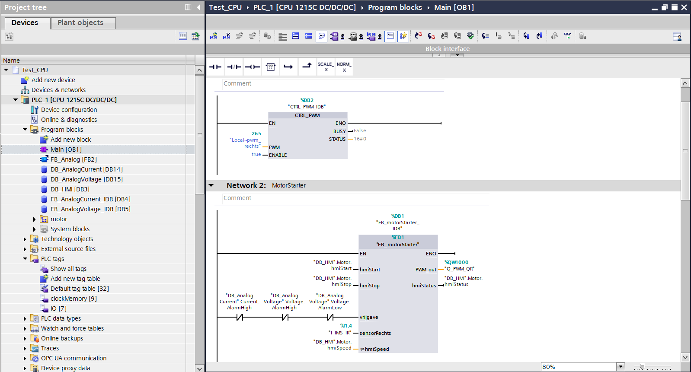
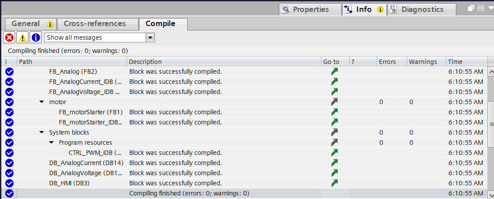

Network 3.3 · Project 3
Smart Factory Project — System Integration & Validation
In deze laatste projectfase werden alle ontwikkelde onderdelen geïntegreerd tot één volledig werkend Smart Factory-systeem. De PLC-logica, WinCC Unified HMI, faceplates en het alarmbeheersysteem werden samen getest, gevalideerd en gedemonstreerd in een volledige projectrun.
Projectinformatie
| Software | Siemens TIA Portal V19 (WinCC Unified) |
|---|---|
| Hardware | Siemens S7-1200 PLC, WinCC Unified Comfort Panel |
| Doelstellingen | Het volledige systeem valideren, van hardwareconfiguratie tot HMI-bediening, en het eindresultaat demonstreren in een werkende opstelling. |
| Technische vaardigheden | Systeemintegratie, testen & validatie, foutopsporing, projectdocumentatie, presenteren van technisch werk |
PLC Programmastructuur
Overzicht van de modulaire PLC-programmastructuur, ontwikkeld in Siemens TIA Portal V19. Het project is opgebouwd met functiebouwstenen (FB's), datablocks (DB's) en een duidelijke softwarearchitectuur voor een overzichtelijke, onderhoudsvriendelijke en schaalbare industriële automatiseringsoplossing.
{kind=link}

{kind=link}

Video's
Resultaat
Een volledig werkend Smart Factory-project, opgebouwd en getest van nul tot een werkende demonstratie: PLC-logica, HMI-bediening en alarmbeheer functioneren als één samenhangend systeem.
Geleerde vaardigheden
Deze fase draaide om het geheel: onderdelen die apart goed werken, ook echt laten samenwerken, fouten opsporen tussen de verschillende lagen, en het resultaat overzichtelijk kunnen tonen en toelichten.